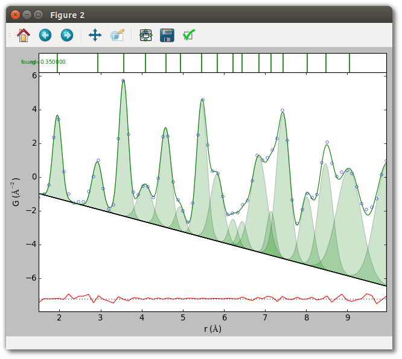
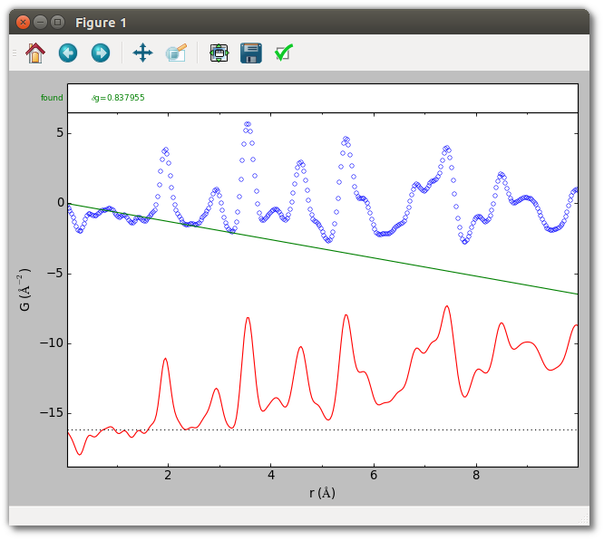
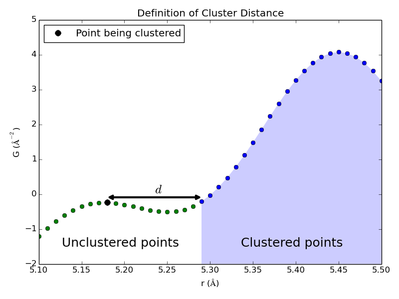
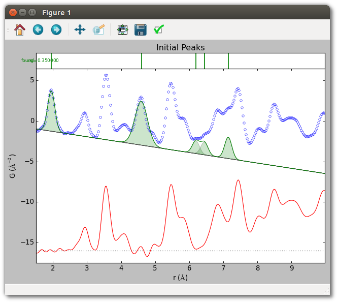

Summary of SrMise parameters¶
This example offers an overview of the SrMise extraction parameters, and demonstrates their use by explicitly setting them to reasonable values in the context of a titanium dioxide (rutile) X-ray PDF with unreliable uncertainties.
For brevity, code snippets below simply add an entry to the dictionary kwds,
which sets SrMise parameters as part of the following pattern:
from diffpy.srmise import PDFPeakExtraction
...
ppe = PDFPeakExtraction() # Initializes main extraction object
kwds = {} # Dictionary for holding parameters
... # Code populating the dictionary
ppe.setvars(**kwds) # Set parameters
Run and plot the results of this example with
python parameter_summary.py

baseline¶
The PDF baseline is a function upon which peaks are added. Crystalline materials have a linear baseline, while the baseline of finite nanomaterials is the shape-dependent “characteristic function”, which is the autocorrelation of the object. The physical origin of the baseline is unmeasured scattering below some minimum value of the experimental momentum transfer, Qmin. The effect of interparticle correlations is sometimes also treated as part of the PDF baseline. While linear baselines are readily estimated, for other materials the user will need to exercise judgement, as the results of peak extraction are generally conditioned upon a reasonable choice of baseline.
Baselines may be specified by importing and instantiating the appropriate
classes, or by using a baseline loaded from an existing .srmise file. The
following BaselineFunctions are importable from
diffpy.srmise.baselines.
- Arbitrary. Any Python function which implements a simple interface. For exploratory use only, as this baseline cannot be saved. See the Extending SrMise documentation for information on creating new baselines.
- FromSequence. Interpolated from lists of r and G(r) values. No parameters.
- NanoSpherical. Characteristic function of sphere. Radius and scale parameters.
- Polynomial(degree=1). Crystalline. Implements estimation.
- Polynomial(degree>1). An arbitrary polynomial.
Example
The baseline G(r) = -0.65*r + 0, with the intercept fixed at 0, is visually
reasonable for the TiO2 sample. This baseline may be utilized from the
command-line with the --bpoly1 -0.65 0c options, or in a script as
follows:
from diffpy.srmise.baselines import Polynomial
...
blfunc = Polynomial(degree=1)
slope = -.65
intercept = 0.
kwds["baseline"] = blfunc.actualize([slope, intercept], free=[True, False])
Run the following command to view this baseline.
srmise data/TiO2_fine_qmax26.gr --bpoly1 -0.65 0c --range 0 10
--no-extract --plot

cres¶
The clustering resolution dc determines when new clusters, and thus new peak-like structures, are identified during the clustering phase of peak extraction. When a point is being clustered, it is added to an existing cluster if the distance (along the r-axis) to the nearest cluster, d, is less than dc. (See image.) Otherwise this point is the first in a new cluster. Note that SrMise oversamples the PDF during the clustering phase, so values less than the Nyquist rate may be specified.

Example
A clustering resolution of 0.05, about half the Nyquist sampling interval for
the TiO2 PDF, is easily set from the command-line with the --cres 0.05
option, or from a script:
kwds["cres"] = 0.05
dg¶
PDF reports reliable experimentally determined uncertainties, but otherwise an ad hoc value must be specified for fitting. This parameter is the primary determinant of model complexity during peak extraction, and even when the reported values are reliable using an ad hoc value can be helpful in generating other plausible models. This parameter can be set to a single value, or a value for each point. The uncertainties of most PDFs have very little r-dependence, so using the same value for each data point often gives points with nearly the correct relative weight. This means the refined value of peak parameters for a given model have very little dependence on the absolute scale of the uncertainties. The estimated uncertainty of peak parameters, however, depends directly on the absolute magnitude.
Example
An ad hoc uncertainty of 0.35 (each point has equal weight) may be set for the
TiO2 example from the command-line with the --dg 0.35 option, or in a
script with:
kwds["dg"] = 0.35
The command-line tool also includes the --dg-mode option, which exposes
several methods for setting more complex uncertainties concisely. For details,
run
srmise --help
initial_peaks¶
Peaks instance containing any number of Peak instances.Peaks instance.Initial peaks are held fixed for the early stages of peak extraction, which conditions any additional peaks extracted. In later stages initial peaks have no special treatment, although they may be set as non-removable, which prevents removal by pruning.
In peak fitting, this parameter specifies the peaks which are to be fit.
Two basic methods exist for setting peaks. The first is a convenience function which takes a position and attempts to estimate peak parameters. The second is manual specification, where the user provides initial values for all peak parameters.
SrMise version 0.5.2 does not support setting initial_peaks from the command-line.
Example
Five initial peaks are specified for the TiO2 sample, using the peak function
described in the corresponding section. The first two peaks are estimated from
position, and show the quality of estimated parameters in regions with little
peak overlap. The other three peaks have manually specified parameters,
and occur in regions of somewhat greater overlap. To aid convergence, the
widths of these latter peaks have been fixed at a reasonable value for a peak
arising from a single atomic pair distance. Although initial_peaks may be set
directly, the estimate_peak() and addpeaks() methods of
PDFPeakExtraction used below are often more convenient.
from diffpy.srmise.peaks import GaussianOverR
pf = GaussianOverR(maxwidth=0.7)
...
## Initial peaks from approximate positions.
positions = [2.0, 4.5]
for p in positions:
ppe.estimate_peak(p) # adds to initial_peaks
## Initial peaks from explicit parameters.
pars = [[6.2, 0.25, 2.6],[6.45, 0.25, 2.7],[7.15, 0.25, 5]]
peaks = []
for p in pars:
peaks.append(pf.actualize(p, free=[True, False, True], in_format="pwa"))
ppe.addpeaks(peaks) # adds to initial_peaks

While initial peaks are fixed during the early stages of peak extraction, in later stages they are treated as any other peak identified by SrMise. In particular, they may be removed by pruning. This can be prevented by setting them as non-removable.
## Don't prune initial peaks
for ip in ppe.initial_peaks:
ip.removable = False
nyquist¶
When nyquist is False, the PDF’s original sampling rate is used. By the Nyquist-Shannon sampling theorem, all PDFs sampled faster than the Nyquist rate contain all the information which the experiment can provide. Points sampled much faster than the Nyquist rate are strongly correlated, however, violating an assumption of chi-square fitting. Nyquist sampling offers the best approximation to independently-distributed uncertainties possible for a PDF without loss of information.
Example
Setting the Nyquist parameter explicitly is straightforward, although the
default value (True for this TiO2 sample) is preferred in most cases. From
the command line include the --nyquist or --no-nyquist option. To use
Nyquist sampling in scripts, set
kwds["nyquist"] = True
pf¶
The following peak functions are importable from diffpy.srmise.peaks.
- GaussianOverR(maxwidth). A Gaussian divided by radius r. Maxwidth gives maximum full-width at half maximum, to reduce likelihood of unphysically wide peaks.
- Gaussian(maxwidth). A Gaussian with a maximum width, as above.
- TerminationRipples(base_pf, qmax). Modifies another peak function, base_pf, to include termination effects for given Qmax. Peak extraction automatically applies termination ripples to peaks, but they should be specified explicitly if using SrMise for peak fitting.
Example
The default peak function is reasonable for the TiO2 example, but can be
explicitly specified from the command-line with --pf "GaussianOverR(0.7)".
In scripts, use
from diffpy.srmise.peaks import GaussianOverR
...
kwds["pf"] = GaussianOverR(0.7)
qmax¶
Qmax is responsible for the characteristic termination ripples observed in the PDF. SrMise models termination effects by taking the Fourier transform of a peak, zeroing all components above Qmax, and performing the inverse transform back to real-space. PDFs where termination ripples were smoothed during data reduction (e.g. using a Hann window) will be fit less well.
Example
For the TiO2 PDF, Qmax = 26 Å-1, which can be explicitly set with
kwds["qmax"] = 26.0
Alternately, to automatically estimate Qmax from the data (about 25.9 Å-1 in this case), use
kwds["qmax"] = "automatic"
At the command-line, both the --qmax 26.0 and --qmax automatic options
are valid.
rng¶
None to use default value.Users are encouraged to restrict fits to the regions of immediate interest.
Example
To extract peaks from the TiO2 sample between 1.5 and 10 Å, in scripts use
kwds["rng"] = [1.5, 10]
At the command-line use --range 1.5 10.
supersample¶
Peak extraction oversamples the PDF during the early phases to assist in peak finding. This value specifies a multiple of the Nyquist rate, equivalent to dividing the Nyquist sampling interval dr = π/Qmax by this value. The supersample parameter has no effect if the input PDF is already sampled faster than this.
Note that large degrees of supersampling, whether due to this parameter or the input PDF, negatively impact the time required for chi-square fitting.
Example
The default value is sufficient for the TiO2 sample, but to set explicitly in a script use
kwds["supersample"] = 4.0
or --supersample 4.0 at the command-line.
Script (parameter_summary.py)¶
#!/usr/bin/env python
##############################################################################
#
# diffpy.srmise by Luke Granlund
# (c) 2015 trustees of the Michigan State University.
# All rights reserved.
#
# File coded by: Luke Granlund
#
# See LICENSE.txt for license information.
#
##############################################################################
"""Demonstrate setting all major SrMise peak exactraction parameters.
This example shows how to explicitly set all major SrMise peak extraction
parameters in the context of a crystalline PDF with unreliable uncertainties.
This is illustrative, as the default values for many parameters are sufficient.
The parameters covered are:
rng (Extraction range)
dg (PDF uncertainty)
baseline (PDF baseline)
pf (peak function used during extraction)
qmax (maximum momentum transfer Q)
nyquist (whether to use Nyquist sampling)
supersample (minimum amount to oversample during initial stages)
cres (clustering resolution)
initial_peaks (peaks already assumed to exist during extraction)"""
import matplotlib.pyplot as plt
from diffpy.srmise import PDFPeakExtraction
from diffpy.srmise.baselines import Polynomial
from diffpy.srmise.peaks import GaussianOverR
from diffpy.srmise.applications.plot import makeplot
def run(plot=True):
## Initialize peak extraction
# Create peak extraction object
ppe = PDFPeakExtraction()
# Load the PDF from a file
ppe.loadpdf("data/TiO2_fine_qmax26.gr")
###### Set up extraction parameters.
# In this section we'll examine the major extraction parameters in detail.
# diffpy.srmise strives to provide reasonable default values for these
# parameters. For normal use setting the range, baseline, and uncertainty
# should be sufficient.
kwds = {}
## Range
# Range defaults to the entire PDF if not specified.
kwds["rng"] = [1.5, 10.]
## dg
# diffpy.srmise selects model complexity based primarily on the uncertainty
# of the PDF. Note that very small uncertainties (<1%) can make peak
# extraction excessively slow. In general, the smaller the uncertainty the
# more complex the model. PDFs which report no uncertainty, or report
# unreliable values must be assigned one. By default, a PDF which does not
# report uncertainties uses 5% the maximum minus minimum values. Common
# causes of unreliable uncertainties include oversampling (uncertainties in
# nearby data are strongly correlated, as for this PDF) and/or
# integrated diffraction patterns obtained by a method that also introduces
# correlation to the 1D diffraction pattern. Consequently, the assumption
# of both least-squares fitting and the Akaike Information Criterion that
# the data are at least approximately independently distributed is not
# valid. In this case results obtained by diffpy.srmise may be useful,
# especially when they can be intrepreted in light of prior knowledge, but
# strong statistical conclusions cannot be drawn. For additional
# discussion of this subtle yet important issue see:
# [1] Egami and Billinge. (2012). Underneath the Bragg Peaks: Structural
# Analysis of Complex Materials (2nd ed.). Oxford: Pergamon Press.
# [2] Granlund, et al. (2015) Acta Crystallographica A, 71(4), 392-409.
# doi:10.1107/S2053273315005276
# [3] Yang, et al. (2014). Journal of Applied Crystallography, 47(4),
# 1273-1283. doi:10.1107/S1600576714010516
kwds["dg"] = 0.35 # Play with this value!
## baseline
# As a crystal PDF, a linear baseline crossing the origin is appropriate.
# Here we define the linear baseline B(r) = -.5*r + 0, and explicitly set
# the y-intercept as a fixed parameter which will not be fit. For
# crystal PDFs the theoretical value of the slope is -4*pi*rho0, where
# rho0 is the number density. Nevertheless, imperfect normalization of the
# PDF means the experimental baseline is proportional to that value.
blfunc = Polynomial(degree=1)
slope = -.65 # Play with this value!
y_intercept = 0.
kwds["baseline"] = blfunc.actualize([slope, y_intercept],
free=[True, False])
## pf
# The pf (peakfunction) parameter allows setting the shape of peaks to be
# extracted. Termination effects are added automatically to the peak
# function during extraction. In the harmonic approximation of atomic
# interactions peaks in the PDF are well approximated by a Gaussian/r.
# (Note, however, that the values used for peak parameters -- namely
# position, width, and area -- are for the Gaussian itself). diffpy.srmise
# uses width-limited peaks to reduce the likelihood of extracting
# unphysically wide peaks in regions of high overlap. The parameter
# indicates the max fwhm permitted. By default, diffpy.srmise uses a
# maximum width of 0.7, which is generally reasonable if the r-axis of the
# PDF is given in angstroms. Models where many peaks reach the maximum
# width, and models that are very sensitive to the choice in maximum width,
# are strong signs that diffpy.srmise is having difficulty finding peaks
# which are sufficiently constrained by the data.
pf = GaussianOverR(0.7)
kwds["pf"] = [pf] # Despite the list, only one entry is currently supported.
## qmax
# PDFs typically report the value of qmax (i.e. the maximum momentum
# transfer q in the measurement), but it can be specified explicitly also.
# If the PDF does not report qmax, diffpy.srmise attempts to estimate it
# directly from the data. This estimate can also be used by setting qmax
# to "automatic". An infinite qmax can be specified by setting qmax to 0,
# In that case the Nyquist rate is 0 (infinite resolution), and
# diffpy.srmise does not consider Nyquist sampling or termination effects.
kwds["qmax"] = 26.0
## nyquist
# This parameter governs whether diffpy.srmise attempts to find a model
# on a Nyquist-sampled grid with dr=pi/qmax, which is a grid where data
# uncertainties are least correlated without loss of information. By
# default this parameter is True whenever qmax > 0, and generally it
# should not need to be changed. Setting it to False allows extracted
# models retain more complexity because the data appear to have more
# statistically independent points than they truly do. For a detailed
# discussion of Nyquist sampling and the PDF see:
# [4] Farrow et al. (2011). Physical Review B, 84(13), 134105.
# doi:10.1103/PhysRevB.84.134105
kwds["nyquist"] = True
## supersample
# This parameter dictates the data be oversampled by at least this factor
# (relative to the Nyquist rate) during the early stages of peak
# extraction. If the input PDF is even more finely sampled, that level of
# sampling is used instead. The default value of 4.0 is ad hoc, but has
# been empirically sufficient. Increasing this value may help the peak-
# finding and clustering process, but reduces speed.
kwds["supersample"] = 4.0
## cres
# The cres (clustering resolution) parameter governs the sensitivity of the
# clustering method used by diffpy.srmise. In short, when the data are
# being clustered, data which are further than the clustering resolution
# from any other cluster (measured along the r-axis) are considered to be a
# new cluster rather than a member of an existing one. The default value
# is the Nyquist sampling interval pi/qmax, and on most data it should not
# greatly impact model complexity. In some cases making it smaller may
# help the peak-finding process. Here it is roughly half the Nyquist
# interval.
kwds["cres"] = 0.05
# Apply peak extraction parameters.
ppe.setvars(**kwds)
## initial_peaks
# Initial peaks are peaks which are kept fixed during the early stages of
# peak extraction, effectively condition results upon their values. Since
# initial peaks are sometimes dependent on other SrMise parameters (e.g.
# the peak function used) it is good practice to set them after other
# parameters. Although the "initial_peaks" parameter can be set as with
# the parameters above, SrMise provides helper functions to do so more
# easily. There are two basic ways to quickly specify initial peaks:
# 1) Supplying the approximate position of the peak, and letting
# diffpy.srmise estimate the peak parameters.
# 2) Explicit specification of peak parameters.
## Initial peaks from approximate positions.
# This routine estimates peak parameters by finding the peak-like cluster
# containing the specified point. It does not search for occluded peaks,
# so works best on well-separated peaks. It does, however, take any
# existing initial peaks into account during estimation.
positions = [2.0, 4.5]
for p in positions:
ppe.estimate_peak(p) # adds to initial_peaks
## Initial peaks from explicit parameters.
# Adding initial peaks explicitly is similar to defining a baseline.
# Namely, choosing a peak function and then actualizing it with given
# parameters. For this example peaks are created from the same GaussianOverR
# used during extraction, but one could use a different peak function from
# diffpy.srmise.peaks if desired. The peak parameters are given in terms
# terms of position, width (fwhm), and area, and it is important to specify
# that format is being used so they are correctly changed into the
# internal parameterization. Here two peaks are added in a region of
# overlap, and the width parameter is fixed at a reasonable value to aid
# convergence in this region.
pars = [[6.2, 0.25, 2.6],[6.45, 0.25, 2.7],[7.15, 0.25, 5]]
peaks = []
for p in pars:
peaks.append(pf.actualize(p, free=[True, False, True], in_format="pwa"))
ppe.add_peaks(peaks) # adds to initial_peaks
## Initial peaks and pruning
# While initial peaks condition what other peaks can be extracted, by
# default they can also be pruned if a simpler model appears better. To
# prevent this, they can be set as non-removable.
for ip in ppe.initial_peaks:
ip.removable = False
## Plot initial parameters
if plot:
makeplot(ppe)
plt.title("Initial Peaks")
###### Perform peak extraction
ppe.extract()
## Save output
# The write() method saves a file which preserves all aspects of peak
# extraction and its results, by convention using the .srmise extension,
# and which can later be read by diffpy.srmise.
#
# The writepwa() method saves a file intended as a human-readable summary.
# In particular, it reports the position, width (as full-width
# half-maximum), and area of of extracted peaks. The reported values
# are for Gaussians in the radial distribution function (RDF) corresponding
# to this PDF.
ppe.write("output/parameter_summary.srmise")
ppe.writepwa("output/parameter_summary.pwa")
## Plot results.
# Display plot of extracted peak. It is also possible to plot an existing
# .srmise file from the command line using
# srmise output/TiO2_parameterdetail.srmise --no-extract --plot
if plot:
plt.figure()
makeplot(ppe)
plt.show()
if __name__ == '__main__':
run()